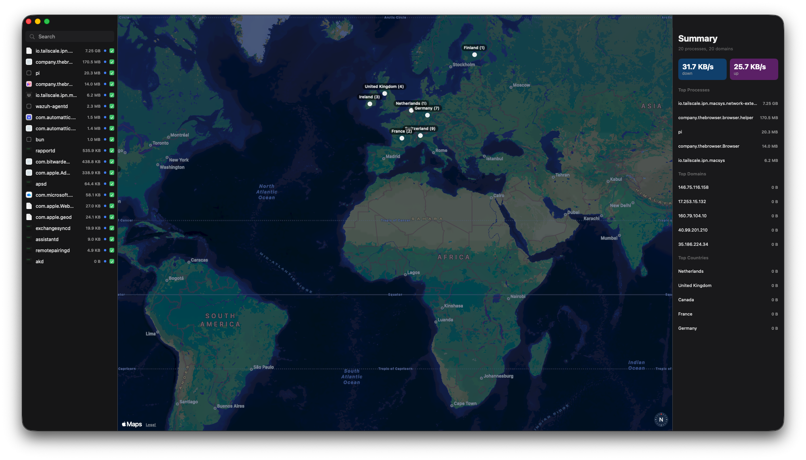
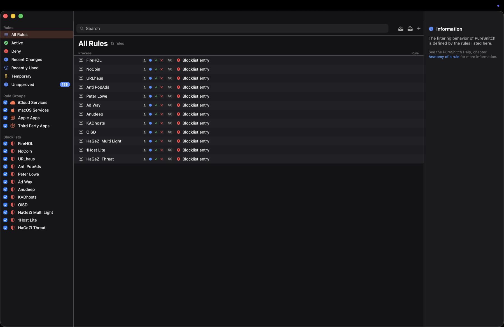

Outbound visibility for macOS
See every connection.
FreeSnitch is an open-source macOS firewall that shows where processes connect and lets you decide what happens next.

Start with a map, not a mystery.
See active connections in real time, grouped by process and destination. Geolocation stays offline, and FreeSnitch collects no telemetry.
- Cost
- Free to use
- Collection
- Zero telemetry
- Platform
- macOS 14+ on Apple Silicon

The useful detail is per process.
A destination means more when you can see which app reached it and how much data moved. FreeSnitch keeps that context next to the map.
- Process
- Identify the app that opened the connection.
- Destination
- Inspect the hostname, address, and port.
- Traffic
- Read the bytes moving through each process.
When something reaches out, the choice is yours.
Connection alerts turn an unfamiliar outbound request into a decision you can inspect, narrow, and remember.
A rule should match the question you are asking.
Allow or deny the request, then choose how much of the future to cover. Keep a one-off decision temporary, or make a clear rule that lasts.
-
A process connects
FreeSnitch identifies the process, destination, address, and port before you decide.
-
You set the boundary
Scope the decision to the process, domain, IP, or port. Choose 5 minutes, 1 hour, or forever.
-
The decision persists
Priority ordering keeps broad and narrow rules understandable in the Rules Manager.
- Alert
- Ask before an unapproved connection leaves the Mac.
- Silent Allow
- Let matching traffic pass without interrupting you.
- Silent Deny
- Reject matching traffic without opening an alert.
Set boundaries that make sense to you.
The Rules Manager turns decisions into a policy you can inspect. Other controls cover the paths that names alone cannot.

The rule stays legible.
Use glob hostnames, CIDR ranges, and ports. Search the fields you care about, then let priority ordering make the match explicit.
The map helps you notice. The Rules Manager helps you make the decision repeatable.
- DNS over HTTPS
- Choose Cloudflare, Quad9, Google, or a custom endpoint. A local proxy listens on
127.0.0.1:53. - Blocklists
- Subscribe to 1Hosts, OISD, StevenBlack, or HaGeZi, with scheduled refreshes.
- pfctl anchor
- Apply kernel-level IP, CIDR, and port blocking through a pfctl anchor.
- Offline geolocation
- Place active connections on the map without sending location lookups to a third party.
A firewall should explain its own limits.
FreeSnitch separates visibility, policy, and enforcement so you can see what the app can do before you rely on it.
It fails open by design.
If the GUI is not running or does not answer, traffic is allowed rather than blocked. That keeps a broken interface from becoming a connectivity outage.
- Network System Extension
- FreeSnitch is a per-process outbound application firewall built on a Network System Extension.
- Privileged helper
- The helper handles the system-level work while the GUI presents decisions and policy.
- Data collection
- No telemetry, analytics SDK, or license check. Connection geolocation is offline.
- Distribution
- Distribution is signed and notarized with a Developer ID. No release has been published yet.
The differences are practical.
FreeSnitch sits between a full outbound firewall and the narrow protection built into macOS. Here is the shape of that choice.
| Capability | FreeSnitch | Little Snitch | LuLu | macOS Firewall |
|---|---|---|---|---|
| Cost | Free | Paid | Free | Included |
| Outbound application firewall | Per process | Per process | Per process | Inbound only |
| Live world map and byte counts | Yes | Yes | No | No |
| Scoped connection alerts | Yes | Yes | Yes | No |
| Rules for host, CIDR, and port | Yes | Yes | Limited | No |
| DNS over HTTPS and local proxy | Yes | Yes | No | No |
| Blocklists with scheduled refresh | Yes | Yes | No | No |
| Source license | MIT | Proprietary | GPL | Proprietary |
FreeSnitch has no release yet, so the repository and current build are the reference. If per-process enforcement is a hard requirement, verify the Network Extension entitlement before relying on any tool.
Know what you can use today.
The source is ready to inspect. Distribution is not published yet, and one platform approval still matters to the full enforcement story.
Source is available
Read the SwiftUI app, helper, Network Extension target, rules, DNS proxy, and pfctl integration in the repository.
No release yet
There is no signed download or Homebrew cask to install. Build from source for now.
Entitlement still matters
Apple gates the Network Extension entitlement. The current source is the reference until a signed release is published.
Build from source. Approve only what you understand.
Until a release exists, XcodeGen and Xcode are the installation path. The project requires macOS 14+ and Apple Silicon.
Install XcodeGen
Use Homebrew to create the Xcode project.
Generate and build
Run the project commands from the repository root.
Approve the helper
macOS asks for the system extension approval after first launch.
brew install xcodegen
git clone https://github.com/isaaclins/freesnitch.git
cd freesnitch
xcodegen generate
xcodebuild -project FreeSnitch.xcodeproj -scheme FreeSnitch \
-configuration Release -derivedDataPath build build
open build/Build/Products/Release/FreeSnitch.appRead the source before you trust the filter.
FreeSnitch is free to inspect, fork, and improve. Source, issues, contribution notes, and the MIT license live in the repository.
Project origin
FreeSnitch is an independently maintained fork of PureSnitch created by Moamen Basel. It is MIT licensed. Moamen Basel does not maintain or endorse this fork.